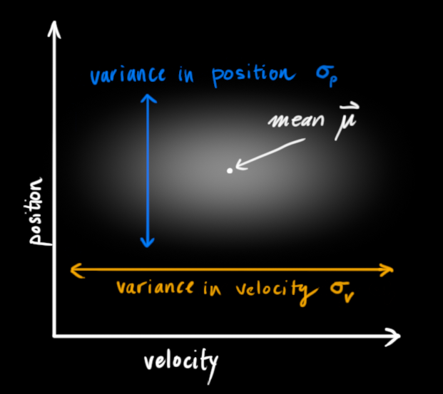
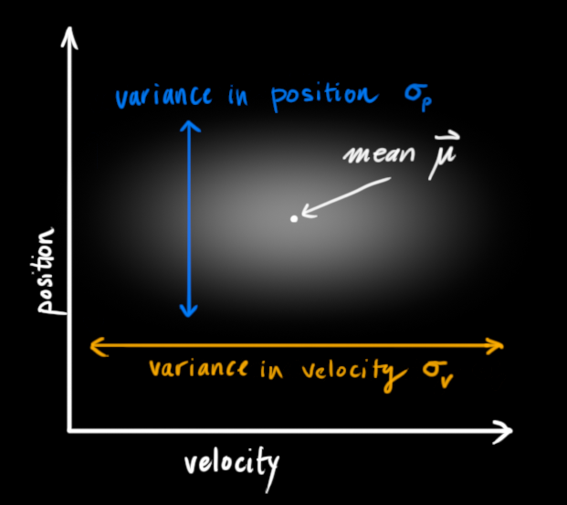

Often an agent is uncertain what state the world is in. Filtering (or monitoring) is the task of tracking and updating the belief state (the distribution)
We start with
Sometimes we have state spaces which are too large for exact inference (i.e. too large for the forward algorithm) or just to hold in memory. For example, if the state space
Instead, we can use particle filtering, which provides an approximate solution.
With particle filters, possible states are represented as particles (vectors); the density of these vectors in state space represents the posterior probability of being in a certain state (that is, higher density means the true state is more likely in that region), and the set of all these vectors represents the belief state.
Another way of putting this: Particles are essentially samples of possible states. Each particle can be thought of as a hypothesis that we are in the state it represents. The more particles there are for a state mean the more likely we are in that state.
So to start, these particles may be very diffuse, spread out across the space somewhat uniformly. As more data (measurements/observations) is collected, the particles are resampled and placed according to these observations, and they start to concentrate in more likely regions.
More formally, our representation of
Particles have weights, and they all start with a weight of 1.
As time passes, we "move" each particle by sampling its next position from the transition model:
As we gain evidence, we fix the evidence and downweight samples based on the evidence:
These particle weights reflect how likely the evidence is from that particle's state. A result of this is that the probabilities don't sum to one anymore.
This is similar to likelihood weighting.
Rather than tracking the weighted samples, we resample.
That is, we sample
The particle filter algorithm:
# s is a set of particles with importance weights
# u is a control vector
# z is a measurement vector
def particle_filter(s, u, z):
# a new particle set
s_new = []
eta = 0
n = len(s)
for i in range(n):
# sample a particle (with replacement)
# based on the importance weights
p = sample(s)
# sample a possible successor state (i.e. a new particle)
# according to the state transition probability
# and the sampled particle
# p' ~ p(p'|u, p)
p_new = sample_next_state(u, p)
# use the measurement probability as the importance weight
# p(z|p')
w_new = measurement_prob(z, p_new)
# save to new particle set
s_new.append((p_new, w_new))
# normalize the importance weights
# so they act as a probability distribution
eta = sum(w for p, w in s_new)
for i in range(n):
s_new[i][1] /= eta
Particle filters do not scale to high-dimensional spaces because the number of particles you need to fill a high-dimensional space grows exponentially with the dimensionality. Though there are some particle filter methods that can handle this better.
But they work well for many applications. They are easy to implement, computationally efficient, and can deal well with complex posterior distributions.
There are also DBN particle filters in which each particle represents a full assignment to the world (i.e. a full assignment of all variables in the Bayes' net). Then at each time step, we sample a successor for each particle.
When we observe evidence, we weight each entire sample by the likelihood of the evidence conditioned on the sample.
Then we resample - select prior samples in proportion to their likelihood.
Basically, a DBN particle filter is a particle filter where each particle represents multiple assigned variables rather than just one.
(note: the images below are all sourced from How a Kalman filter works, in pictures, Tim Babb)
Kalman filters can provide an estimate for the current state of a system and from that, provide an estimate about the next state of the system. They make the approximation that everything is Gaussian (i.e. transmissions and emissions).
We have some random variables about the current state (in the example below, they are position

These random variables may be uncorrelated, as they are above (knowing the state of one tells us nothing about the other), or they may be correlated like below.

This correlation is described by a covariance matrix,
We say the current state is at time
The Kalman filter basically takes the random variable distributions for the current state and gives us new random variable distributions for the next state:

In essence it moves each possible point for the current state to a new predicted point.
We then have to come up with some function for making the prediction. In the example of position
We can represent these functions collectively as a matrix applied to the state vector:
We call this matrix
We can similarly apply the prediction matrix to determine the covariance at time
It's possible we also want to model external influences on the system. In the position and velocity example, perhaps some acceleration is being applied. We can capture these external influences in a vector
For the position and velocity example, this control vector would just have acceleration
Again, we can pull out the coefficients for the control vector terms into a matrix. For this example, it would be:
This matrix is called the control matrix, which we'll notate as
We can then update our prediction function:
These control terms capture external influences we are certain about, but we also want to model external influences we are uncertain about. To model this, instead of moving each point from the distributions of

We can incorporate the uncertainty modeled by
Now consider that we have sensors which measure the current state for us, though there is some measurement error (noise). We can model these sensors with the matrix
This gives us the final equation for our predicted state values.
Now say we've come to the next state and we get in new sensor values. This allows us to observe the new state (with some noise/uncertainty) and combine it to our predicted state values to get a more accurate estimate of the new current state.
The readings we get for our state random variables (e.g. position and velocity) are represented by a vector
We are left with two Gaussians - one describing the sensor readings and their uncertainty, and another describing the predicted values and their uncertainty. We can multiply the distributions to get their overlap, which describes the space of values likely for both distributions.

The resulting overlap is, yet again, also a Gaussian distribution with its own mean and covariance matrix.
We can compute this new mean and covariance from the two distributions that formed it.
First, consider the product of two 1D Gaussian distributions:

As a reminder, the Gaussian distribution is formalized as:
We can solve for both
To make this more readable, we can factor out
In dimensions higher than 1, we can re-write the above with matrices (
This matrix
So we have the two following distributions:
And using the above, we compute their overlap to get a new best estimate:
Simplifying a bit, we get:
Which are the equations for the update step, which gives us the new best estimate
Kalman filters work for modeling linear systems; for nonlinear systems you instead need to use the extended Kalman filter.